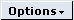

Events
Within each of the House Sales workbenches, you need to record key events that occur during the process. For example:
- In Workbench, these might include a site visit, a follow-up letter, a plot purchase or closing a file.
- In Sales Workbench, these might include reserving a plot, recording exchange of contracts, recording occupation, or recording details of part-exchange property.
- In Cancellations Workbench, these might include recording monies received or refunded, or closing a file.
Some of the events are optional, others may be required in order to correctly manage the business process involved. There are some events that you can only record if certain other events have already happened (for example, a plot cannot be 'reserved' until it has been 'released'), and normally these events will not be available until the prior event has been recorded. In addition, creates some events automatically, for example when you print a letter.
Once events have been recorded, you can see them in the History tab on the summary page of the relevant record.
To record an event:
- From the Summary page for the record you want to add an event for, click the  button.
displays a drop-down menu which includes the events that are available to you.
- Click the event you want to record.
(Alternatively, click the History tab, use the Add Type drop-down to choose the event you want to add, and click  .)
.)
displays an Add Event page. The fields available will depend on the specific event, but usually include at least a field for the date when the event occurred and a field for you to enter comments about the event.
- Enter the details of the event.
- If you want to create a follow-up action for yourself or another user (for example to remind a colleague to phone a purchaser, or to record an appointment you have arranged), the Follow Up?box and fill in the details on the Follow Up Action tab. See Actions.
- Click
 to save details of the event.
to save details of the event.
Configuring events
Each of the workbenches has a different set of events available, with a different maintenance function:
-
Sales Workbench Events
-
Part Exchange Workbench Events
-
Workbench Events
-
Cancellation Workbench Events
-
General Events
-
Issue Events
-
Call Events
-
Events
You also need to set up event security to control who can run each event; see Event Security.